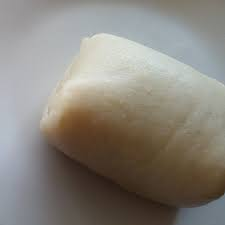

Fu-Fu Recipe

Description
Portuguese traders from Brazil introduced fufu to Africa and when it landed in
Ghana, ancestors named it 'fufuo'. They mixed the fermented cassava with plantain
and pounded it to get a sticky mixture. Since then, they passed this lesson from
generation to generation. Ideally, 'fufu' loosely translates to a mashed mix.
Ingredients
- 2 Pounds Yams
- Kosher Salt, To Taste
- Freshly Ground Black Pepper, To Taste
- One Teaspoon Olive Oil
Steps
- Gather the Ingredients
- Carefully peel the Yams
- Cut the peeled yams into 2-inch chunks and place them in a large pot of well
salted water
- Bring the yams to a boil over high heat. Keep a rapid boil until the yams
are just turning soft, about 20 minutes
- Drain the yams, reserving 2 cups of the cooking water. Allow the yams to cool
- Place the cooled yams in a large bowl along with salt and pepper to taste, and the olive oil
- Mash and mix the ingredients using a potato masher. The mixture will be uneven and lumpy
- Place the fufu mixture in a food processor or blender. Pulse briefly at low speed to
remove any lumps but do not puree
- Place the yam mixture back in the bowl and beat it with a wooden spoon until it becomes
smooth. The mixture should become sticky and slightly elastic
- Shape the fufu into balls of equal size and serve as an accompaniment to your favorite soup or stew
Links